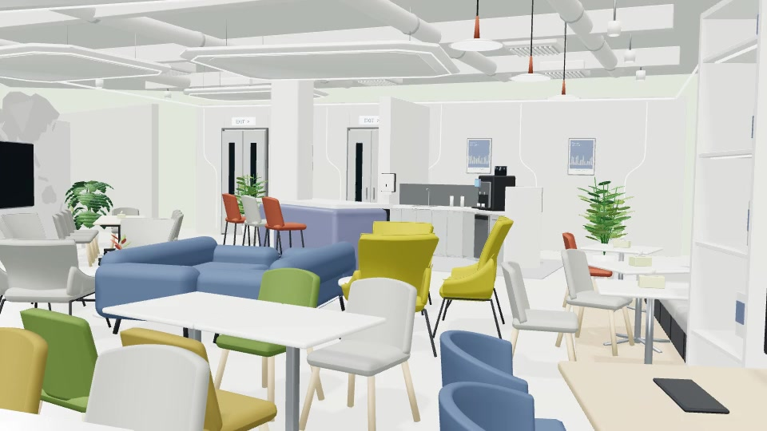
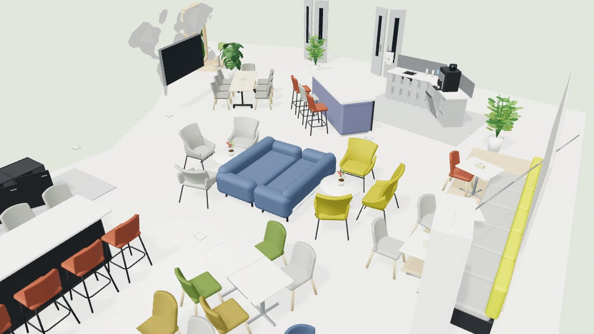
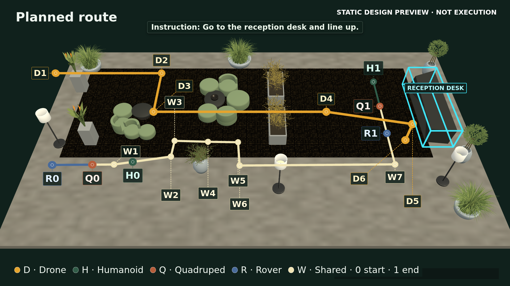

FINDING 01
1. 更好的位姿不会机械地带来更好的原生深度
M3 的轨迹优于 M2：ATE 从 0.167 m 降至 0.121 m，旋转误差从 0.31° 降至 0.19°；但 M3 的原生 DA3 AbsRel 反而略差（20.38% 对 19.06%）。经过建模后，排序再次反转：M3 的模型深度 AbsRel 为 8.37%，优于 M2 的 9.29%。上游指标与最终场景忠实度相关，却不能彼此替代。
智能体世界仿真与建图
读作 “awesome”
把真实空间，变成虚实融合智能体可以使用的世界。
Phygital = physical（物理）+ digital（数字），即虚实融合。
发布于
01 / OVERVIEW
Agentic 重建由大模型检查观测、调用建模工具，并迭代构建和验证可编辑场景。挑战不只是生成一个令人信服的房间，还在于保留尺度、形状与空间关系，让结果在渲染之外仍然有用。AWSM 研究如何用几何证据约束这一过程，让输出成为下游智能体更忠实的空间参照。
我们对 NVIDIA Isaac Sim 中的 World Lobby 仿真场景，沿四条完整工程路径进行重建：从纯 RGB 建模，逐步加入估计位姿、深度与真实相机位姿。每条路径交付的是冻结的 Blender 场景，而不只是点云或新视角渲染器。实验关注的不是谁生成了最漂亮的单帧，而是几何证据究竟带来了什么、没有解决什么，以及哪些误差会穿过对象化建模继续存在。
M1 数值使用诊断性的 GT-assisted Sim(3)；所有结论仅适用于本次冻结的单场景研究。
02 / MOTIVATION
负责重建的智能体可以搭建一个看似合理的房间，却重建错转角、距离或通道。对具身智能体而言，这些不只是视觉缺陷，还会改变目标的位置与身体可以通过的路线。几何锚定，是在信息可用时以位姿、深度与米制证据约束建模过程，而非仅依赖视觉合理性。关键问题是：这些约束如何在观测转化为可编辑对象的过程中得到保留？
前台任务让这种联系变得具体：在重建地图中标记目标、设定路线，再由机器人控制器执行。本文用“场景表示”指可编辑的对象与几何，用“地图”描述它在导航中的作用，用“仿真资产”描述它与仿真器的集成。AWSM 中的“世界”指这种可复用的空间环境，而非学习得到的动力学预测模型。连接导航、记忆、交互与仿真的持久空间基础是长期目标；当前实验和 demo 分别研究其几何基础，并展示一种下游用途。
纯单目投影几何存在全局尺度歧义；学习型米制深度提供有用先验，却不是对每个真实尺寸的独立测量。标定 RGB-D、已知基线或长度，以及视觉惯性估计，都可以提供米制约束。IMU 融合能在运动激励充分、初始化、偏置估计、时间同步与标定可靠时恢复米制运动；IMU 不是直接测距传感器，“带 IMU”不等于“尺度一定准确”。
尺度、局部形状、相机位姿和可通行连通性需要分别检查。弯曲转角被简化成直角，不能只靠缩放修复。位姿条件可以改善深度重建，但 DA3 消融和本文 M2/M3 的结果都不支持“所有深度指标必然同步改善”；下文四条路线是完整系统比较，而非只切换 IMU 的单变量实验。
03 / WORKFLOW
负责重建的智能体遵循共同的“观察—构建—验证”循环：检查可用证据，编写 Blender Python 构建对象，渲染检查视图，并在冻结评测前迭代修改。这里的 agentic 指这种工具驱动的建模过程；下游机器人控制器承担另一种角色。
四条路径使用相同的 180 张 RGB 身份和相同的 Astra–Blender 建模目标。M1 检验没有米制测量时视觉先验能走多远；M2 加入 RGB-only ViPE 位姿与 pose-conditioned DA3 深度；M3 使用 ORB-SLAM3 单目惯性位姿与同类 DA3 观测；M4 提供 GT 相机位姿，用于诊断剩余建模误差，但建模时不读取 GT 网格或 GT 深度。
所有场景冻结后才引入真值。M2/M3 只使用一次全局 SE(3) 配准，尺度固定为 1；不进行 mesh ICP 或逐视角拟合。M1 没有原生米制轨迹，其模型空间指标使用由 5 个手工相机关联得到、冻结不变的 GT-assisted Sim(3)，因此只能解释形状与显示误差，不能视为米制恢复。
04 / RESULTS AND ANALYSIS
FINDING 01
M3 的轨迹优于 M2：ATE 从 0.167 m 降至 0.121 m，旋转误差从 0.31° 降至 0.19°；但 M3 的原生 DA3 AbsRel 反而略差（20.38% 对 19.06%）。经过建模后，排序再次反转：M3 的模型深度 AbsRel 为 8.37%，优于 M2 的 9.29%。上游指标与最终场景忠实度相关，却不能彼此替代。

FINDING 02
在声明配准且不使用 mesh ICP 的条件下，双向表面误差从纯 RGB 诊断基线的 0.376 m，依次降至 ViPE 的 0.118 m、ORB-SLAM3 的 0.082 m 与 GT 位姿的 0.072 m。M4 在本案例中拥有最强几何，而 M3 依靠估计轨迹已经缩小了大部分差距。
FINDING 03
在共享相机中将每个重建与 GT 对照：先从 M1 观察语义上合理的房间如何偏离米制布局；再比较 M2/M3，寻找几何改善但 RGB 相似度未同步提升的区域；最后检查 M4，把相机位姿不再是瓶颈后仍然存在的建模与材质误差分离出来。

滚动到此处加载三维对比。

M1 / 视角 0

INPUT / GT RGB
网页只在运行时隐藏顶棚与四周墙体，以便剖视检查；运行时配准与显示选择不会修改可下载的冻结 GLB 或 Blend 文件。
在共享的 180 视角协议下，M2–M4 的最终场景深度都显著接近 GT：相较原生 DA3，AbsRel 约下降 51–60%。一种可能解释是，对象级聚合抑制了局部不一致预测；但这仍是假说，而非受控因果结论。同一种抽象也可能删除真实表面与细节。
几何最强的路径并未统治 PSNR 或 SSIM。位姿消除了一类不确定性，外观仍受材质估计、照明、物体细节与渲染器差异支配。只评 RGB 会漏掉空间进步，只评几何也会漏掉感知失败。
Table 7 使用一组固定随机种子的 100 个相机，它们从固定 5 帧之外的 175 张建模帧中抽取。这些视角相对固定检查是额外视角，但其 RGB 在建模阶段可见。在该集合上，M4 的深度 AbsRel 最低（7.47%），M3 的 RMSE 最低（1.090 m）。

Office Café 不是 World Lobby 基准的第二次运行，也不构成同协议的定量验证。它是一个真实采集的外部案例，用于展示对象化场景、求解后的原视频相机轨迹、视频—模型对照与物理回放如何组合成一个可检查的空间产物。作者观察到的一类失败是：真实的弯曲转角被简化成方正结构。它提醒我们区分局部形状与全局尺度——尺度正确并不能自动修复形状错误；这里将其作为定性观察，而非另一组定量结果。

来自已发布模型渲染视频的本地预览。

来自已发布较强摇晃回放的本地预览。
链接通过 lang=en 请求英文，实际语言与可用性由外站控制。这里展示的是本地内容预览，并非外站页面截图。若嵌入不可用，可使用全屏外链，或查看下方本地模型与视频。
两个模型默认采用俯视剖切视图，仅在显示时裁去上部遮挡，以展示室内布局；点击“剖切视图”可切换完整模型，“重置视角”可恢复总览。原始坐标、材质和模型文件保持不变。联动旋转用于观察布局，不代表几何配准。
同步播放 · 70.1 秒 · 30 fps
DEMO / MAP-BASED EMBODIED EXECUTION
这个 demo 在 NVIDIA Isaac Sim 中将重建连接到下游使用：在导航地图中标出前台，设定路线，再让无人机、人形、四足和轮式机器人执行任务。同一个空间参照连接目标、路径约束与运动控制：从可以查看的重建场景，走向可以用于行动的地图。
任务意图：让机器人前往前台，并在那里排成一列。

上方指令说明任务意图，不代表本次演示实现了语言到计划的自动解析。路线人工设定，并同时参考 M4 重建地图和原始几何筛选；这不是只依赖重建图的规划 benchmark。
成片为 156 秒、1× 原速：场景（0–6秒）、重建（6–12秒）、路线设计（12–18秒）、导航（18–156秒）。导航来自新运行 20260930-214924，略去开头等待的 12.32 秒，后续终点保持过程不在本剪辑中。地图是静态路线设计图，不是实测执行轨迹。
本 demo 不评测在线视觉定位、学习型指令理解、记忆检索或真实机器人迁移。这些是独立能力，不改变本演示所表达的“利用重建地图执行导航任务”。
人工展示审阅与下方保留的历史自动检查属于不同验证层次，不改变其原始判定。
06 / LIMITATIONS
所有表格都由冻结资产生成；公开 manifest 提供模型哈希、配准、固定视角与固定随机评测索引。
M1 scene.blend ↓ · scene.glb ↓ · manifest ↗
M2 scene.blend ↓ · scene.glb ↓ · manifest ↗
M3 scene.blend ↓ · scene.glb ↓ · manifest ↗
M4 scene.blend ↓ · scene.glb ↓ · manifest ↗
Tables JSON · Scene manifest · Fixed views · Publication manifest · SHA256
07 / CITATION
如果本研究的受控实验、冻结资产或评测协议对你的工作有帮助，请引用下面的交互式研究文章。
@misc{awsm_2026,
title = {{AWSM}: Agentic World Simulation and Mapping},
author = {{Phygital AI}},
year = {2026},
howpublished = {Interactive research article},
url = {https://phygital-ai.github.io/agentic-world-simulation-and-mapping/},
note = {Reconstruction benchmarks, editable scene assets, and map-based embodied demonstration}
}08 / REFERENCES